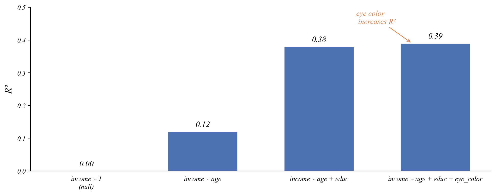
The economist’s data analysis pipeline.
Causation, controls, and model selection
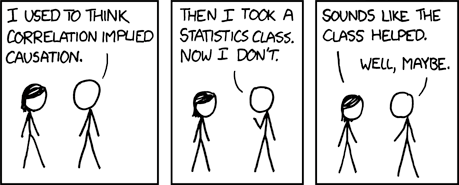
Monthly data from 12 months.
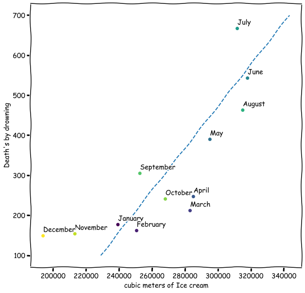
As ice cream sales go up, so do drowning deaths (\(\hat\beta_1\) = 3.4, p < 0.001)!
Q. So ice cream causes drowning?
Correlation cannot tell us which explanation is right.
Both variables follow a seasonal pattern.
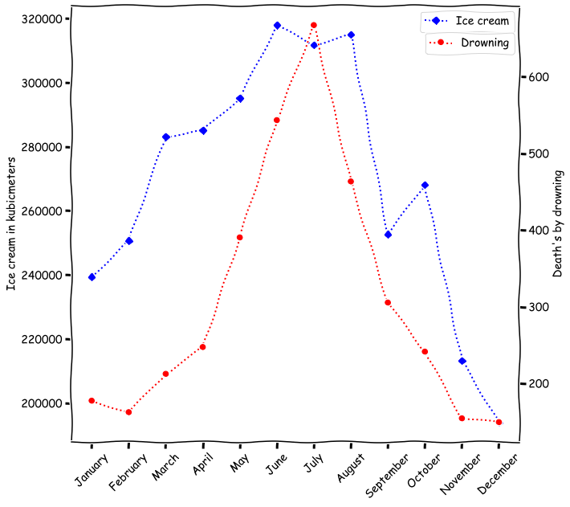
Both ice cream sales and drowning deaths peak in summer months
Season is the confounding variable driving both.
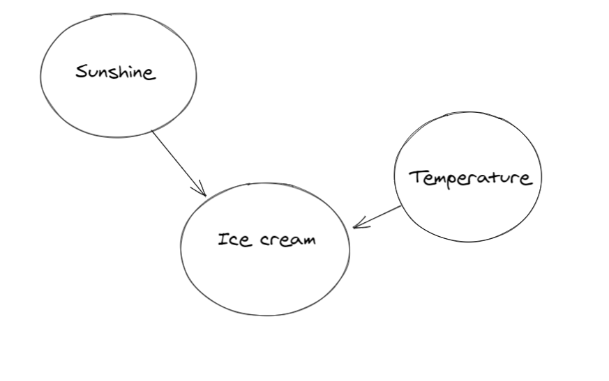
The relationship between ice cream and drowning is spurious.
Adding the confounder to the model removes the spurious relationship.
Simple model (spurious relationship):
\[\text{Drownings} = \beta_0 + \beta_1 \cdot \text{IceCream} + \varepsilon\]
\(\beta_1 > 0\), highly significant
Controlled model (add the confounder):
\[\text{Drownings} = \beta_0 + \beta_1 \cdot \text{IceCream} + \beta_2 \cdot \text{Temperature} + \varepsilon\]
\(\beta_1\) becomes insignificant, \(\beta_2\) captures the real effect
The BRFSS homework arc is a causation story.
| Model | Control | |
|---|---|---|
| HW 4.1 | BMI ~ unemployment_rate | Nothing |
| HW 5.1 | BMI ~ unemployment_rate + Female | Gender |
| HW 5.2 | BMI ~ unemployment_rate × Female | Gender × effect |
| HW 5.3 | BMI ~ unemployment_rate + Female + AGE + College + Married | Multiple |
Each control removes a confounder from the unemployment-BMI relationship.
Three problems remain, even after adding controls.
1. Omitted variable bias
There might be a confounder we didn’t think of (diet, exercise, genetics…)
2. Reverse causality
Maybe poor health causes unemployment, not the other way around
3. Measurement error
BMI in BRFSS is self-reported, so systematic misreporting could bias results
Controls help, but they can’t prove causation on their own.
How do we know if adding controls improves the model?
We need tools to compare models:
How much of the variation does our model capture?
\[R^2 = 1 - \frac{SSE}{SST}\]
\(R^2\) measures how much of the variability in the data is captured by the model.
Q. Is a higher \(R^2\) always better?
R² always goes up when you add variables.
Q. Which of these three models of income do you think is best?

R² always goes up when you add variables.
Q. Which of these three models of income do you think is best?
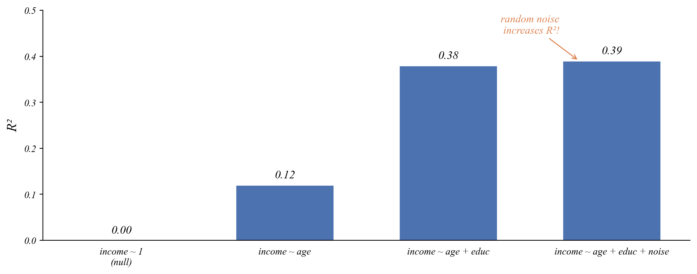
Lets add two random variables to a model and see what happens to R².
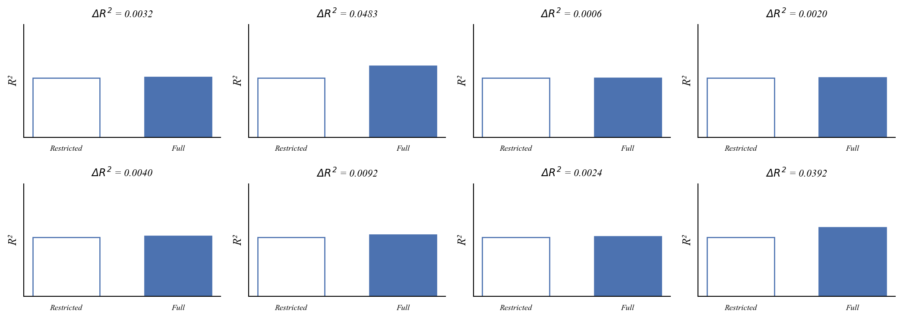
Every time we add noise, R² goes up a little. But only a little.
The distribution of R² improvements from adding noise.
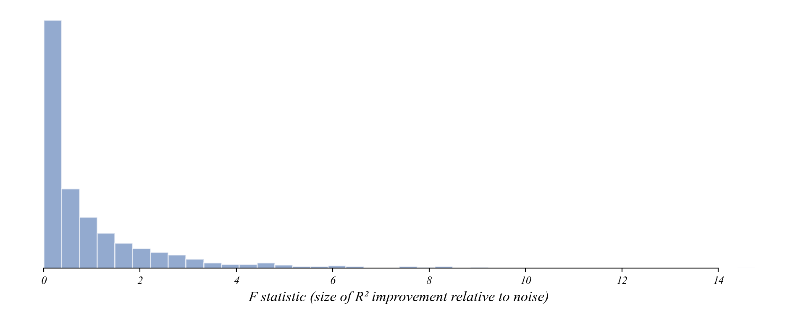
Most improvements are tiny. Large improvements from noise are rare.
Measuring the size of the R² improvement relative to noise.
\[F = \frac{(R^2_F - R^2_R) / k}{(1 - R^2_F) / (n - p)}\]
Numerator: average R² gain per variable.
Denominator: average unexplained variation.
Our simulation matches a known distribution.
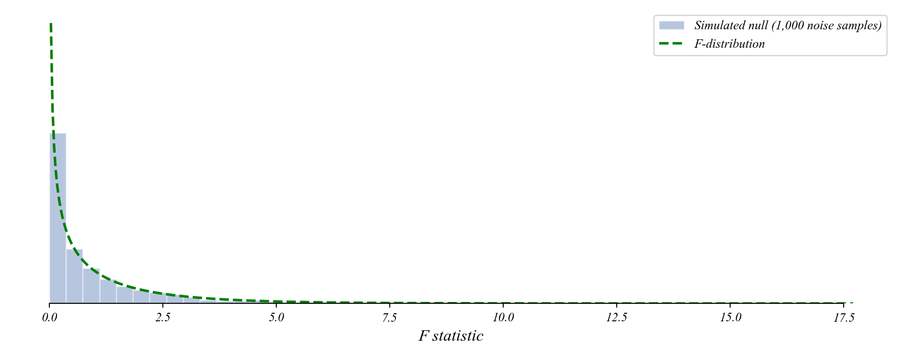
Does adding eye color to the income model improve it?
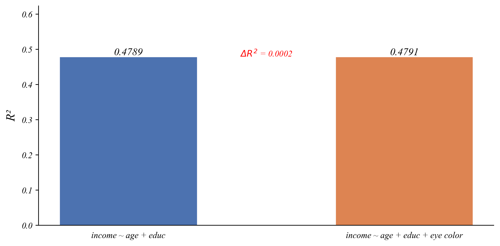
R² went up. But is this improvement real?
Where does eye color land on the F-distribution?
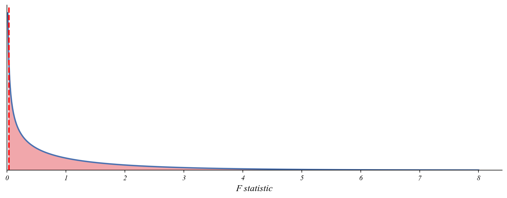
F-statistic: 0.03
p-value: 0.857Large p-value. The improvement is just overfitting.
Where does eye color land on the F-distribution?
F-statistic: 0.03
p-value: 0.857Large p-value. The improvement is just overfitting.
We could also check the t-test on the noise coefficient:
==============================================================================
coef std err t P>|t| [0.025 0.975]
------------------------------------------------------------------------------
Intercept 6.8949 4.274 1.613 0.110 -1.590 15.380
age 0.2350 0.063 3.737 0.000 0.110 0.360
educ 1.9802 0.227 8.723 0.000 1.530 2.431
noise 0.1417 0.785 0.180 0.857 -1.417 1.701
==============================================================================Both the t-test and the F-test agree: noise doesn’t help.
Can we use the t-test to ask whether age and education jointly improve the model?
The t-test checks one coefficient at a time. It can tell us:
But it can’t tell us: do age and education together improve the model?
Do age and education together improve predictions?
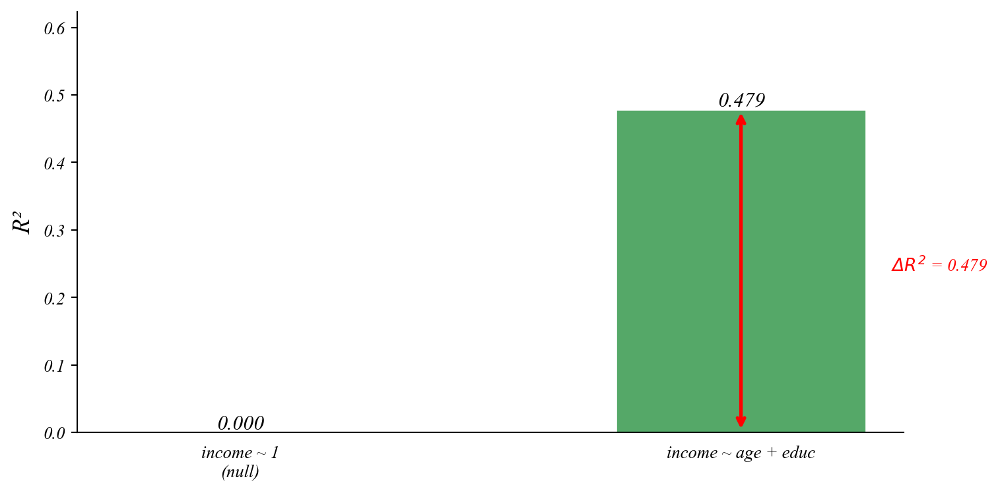
Where does the full model land on the F-distribution?
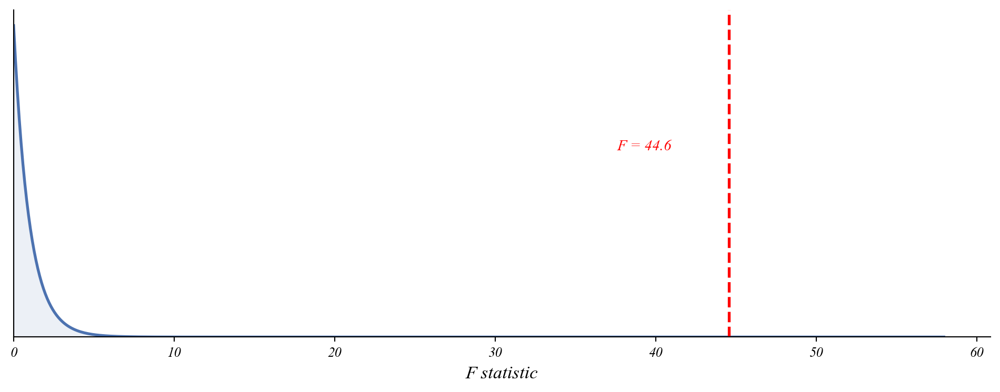
F-statistic: 44.58
p-value: 0.000000Age and education together significantly improve the model.
The research question determines the model.
| Question Type | Model |
|---|---|
| Change in single group | \(y = \beta_0 + \varepsilon\) (One-sample t-test) |
| Differences between groups | \(y = \beta_0 + \beta_1 Group + \varepsilon\) (Two-sample t-test) |
| Relationship between vars | \(y = \beta_0 + \beta_1 x + \varepsilon\) (Simple regression) |
| Multiple factors | \(y = \beta_0 + \beta_1 x_1 + \beta_2 x_2 + \varepsilon\) (Multiple reg) |
| Group-specific relationships | \(y = \beta_0 + \beta_1 x + \beta_2 Group + \beta_3 x \times Group + \varepsilon\) (Interactions) |
| Temporal patterns | \(y_t = \beta_0 + \beta_1 t + \beta_2 Season + \varepsilon_t\) (Time series with fixed effects) |
| Many more! | (You can construct your own) |
For each question, identify the model type and write the equation.
(a) Did average household income change after a new factory opened?
\[\text{income_change} = \beta_0 + \varepsilon\]
(b) Does the effect of study hours on GPA differ for STEM vs. non-STEM majors?
\[\text{GPA} = \beta_0 + \beta_1 \text{hours} + \beta_2 \text{STEM} + \beta_3 \text{hours} \times \text{STEM} + \varepsilon\]
(c) Is there a relationship between commute time and job satisfaction, controlling for salary?
\[\text{satisfaction} = \beta_0 + \beta_1 \text{commute} + \beta_2 \text{salary} + \varepsilon\]
Main ideas about causation, controls, and model selection